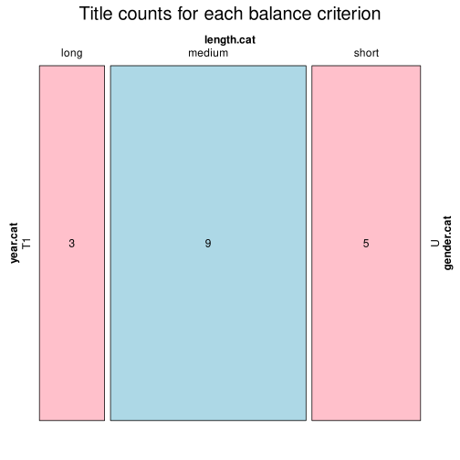

Click on a column heading to sort. Click on a text identifier to read the text (may not work in older browsers).
| Identifier | Encoding | Pages | Words | (Size) | Date (Slot) | Title | Author | Sex | Reprints |
|---|---|---|---|---|---|---|---|---|---|
| FRA40004 |
eltec-1 | 88812 | (medium) | 1831 (T1) | La Peau de chagrin | Balzac, Honoré de (-) | U | unspecified | |
| FRA40005 |
eltec-1 | 49623 | (short) | 1834 (T1) | Séraphita | Balzac, Honoré de (-) | U | unspecified | |
| FRA40366 |
eltec-1 | 93440 | (medium) | 1835 (T1) | Gautier, Théophile (-) | U | unspecified | ||
| FRA40441 |
eltec-1 | 53672 | (medium) | 1836 (T1) | Sand, George (-) | U | unspecified | ||
| FRA40453 |
eltec-1 | 102805 | (long) | 1833 (T1) | Sand, George (-) | U | unspecified | ||
| FRA40463 |
eltec-1 | 62388 | (medium) | 1835 (T1) | Sand, George (-) | U | unspecified | ||
| FRA40464 |
eltec-1 | 93118 | (medium) | 1832 (T1) | Sand, George (-) | U | unspecified | ||
| FRA40465 |
eltec-1 | 61192 | (medium) | 1834 (T1) | Sand, George (-) | U | unspecified | ||
| FRA40467 |
eltec-1 | 42858 | (short) | 1837 (T1) | Sand, George (-) | U | unspecified | ||
| FRA40468 |
eltec-1 | 113382 | (long) | 1837 (T1) | Sand, George (-) | U | unspecified | ||
| FRA40469 |
eltec-1 | 47271 | (short) | 1834 (T1) | Sand, George (-) | U | unspecified | ||
| FRA40470 |
eltec-1 | 90629 | (medium) | 1832 (T1) | Sand, George (-) | U | unspecified | ||
| FRA40473 |
eltec-1 | 61516 | (medium) | 1837 (T1) | Sand, George (-) | U | unspecified | ||
| FRA40723 |
eltec-1 | 38617 | (short) | 1832 (T1) | Louis Lambert | Balzac, Honoré de (-) | U | unspecified | |
| FRA40725 |
eltec-1 | 151015 | (long) | 1821 (T1) | Les Natchez | Chateaubriand, François-René de (-) | U | unspecified | |
| FRA40729 |
eltec-1 | 16406 | (short) | 1825 (T1) | Expédition nocturne autour de ma chambre | De Maistre, Xavier (-) | U | unspecified | |
| FRA40741 |
eltec-1 | 53929 | (medium) | 1827 (T1) | L'âne mort et la femme guillotinée | Janin, Jules (-) | U | unspecified |